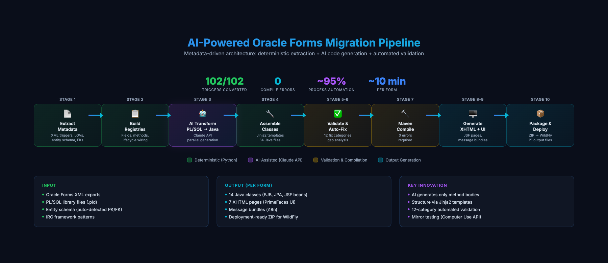
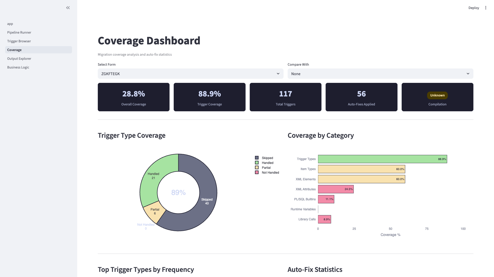

Migrating 4,000+ Oracle Forms to Java EE with a hybrid deterministic + LLM architecture — zero compile errors, governance-first design, autonomous regression-testing framework.
A mid-sized enterprise client operates a critical business ecosystem built on 4,000+ Oracle Forms — a technology sunsetted by Oracle and increasingly impossible to staff. Manual rewrite estimates exceed 200,000 engineer-hours (~100 person-years), with the dominant risk being silent loss of business logic embedded in decades of PL/SQL triggers. The client's requirement was unambiguous: full ownership of the migration process, zero vendor dependency, and deep adaptability to their proprietary Java framework — meaning the tooling had to be built from scratch, purpose-fit for their stack.
The client needed proof that AI-assisted migration could deliver functional parity at scale — not just compilable code.
I architected and delivered an 11-stage hybrid AI pipeline that ingests Oracle Forms XML exports and produces deployable Java EE artifacts — entities, EJBs, JSF views, message bundles, deployment packages — without human intervention in the code generation path.
A 4,000-form migration is not a coding problem. It is a risk management problem. The architectural challenge is building a system where the 4,000th form costs less than the 1st, every migration produces evidence, and failures are loud, localized, and cheap to fix.
Deterministic where possible, AI where necessary — the discipline that separates demos from production systems.

The core decision was to refuse the temptation of "one big LLM prompt." Large-context generation is cheap to demo and catastrophic to operate — it hallucinates class names, invents framework APIs, and produces plausible-looking code that fails at runtime. The pipeline is split along a sharp boundary:
| Orchestration | Python 3.12 · Bash · async/parallel execution |
| AI | Claude API (Sonnet & Opus) · structured prompt engineering · parallel request management |
| Templating | Jinja2 — 18 templates across Java EE and XHTML |
| Target Runtime | Java EE 8 · JSF · PrimeFaces · WildFly |
| Persistence | JPA / EJB — @Stateless, @Named, @ViewScoped |
| Verification | Maven compile gate · custom validation engine · 12-category auto-fix |
| Governance | Streamlit internal dashboard · capability registry |
| Regression Testing | Playwright · Claude Computer Use API · DB snapshot comparator |
How the pipeline handles decades-old PL/SQL with global state, runtime APIs, and undocumented business rules.
-- Validate journal period against global fiscal state DECLARE v_period VARCHAR2(7); v_status NUMBER; BEGIN v_period := NAME_IN(':TEMELJNICA.OBRACUN'); IF v_period < :GLOBAL.TRENUTNI_MESEC THEN BELL; MESSAGE('Zaprto obdobje'); RAISE FORM_TRIGGER_FAILURE; END IF; COPY(v_period, ':TEMELJNICA.OBR_VAL'); END;
// Stage 3 output, Stage 6 auto-fixed, Stage 7 verified public void whenValidateItemObracun() { String period = temeljnica.getObracun(); String currentMonth = sejnoZrno .vrniParameter("TRENUTNI_MESEC"); if (period.compareTo(currentMonth) < 0) { addMessage(FacesMessage.SEVERITY_ERROR, messages.getString("zaprto_obdobje")); throw new ValidationException(); } temeljnica.setObrVal(period); }
Oracle Forms PL/SQL is not a clean language to translate. It mixes procedural logic with runtime API calls (NAME_IN, COPY, GET_ITEM_PROPERTY) that read and mutate UI state dynamically, depends on implicit record buffers, and leans on :GLOBAL.* variables for cross-form communication. A naive translator produces code that compiles but silently corrupts state at runtime.
getIidCustomer() fabrications, maps to inherited getId() from OsnovniType.@PersistenceContext injected into VnosZrno where only FrkSb holds the EntityManager.sejnoZrno references inside @Stateless EJB — CDI scopes don't cross tier.Making AI decisions observable, auditable, and autonomously verifiable against the legacy system.

Enterprise migrations fail quietly. A pipeline that reports "success" while silently dropping 10% of business logic is worse than no pipeline — it shifts failure from detectable (compile error) to undetectable (wrong number in a ledger). I refused to ship that. The Streamlit console makes migration state inspectable at every layer:
Compilation proves code builds. It does not prove the migrated form behaves identically to the original. With 4,000 forms and decades of undocumented business rules, manual regression testing is mathematically impossible. Writing Selenium scripts for each form is a second migration project.
I designed and built a different approach: use the Claude Computer Use API to autonomously operate the legacy Oracle Forms thick client, execute business scenarios, and compare against the same scenarios on the migrated JSF web app via Playwright — both runs snapshotting the database before & after. The framework is operational; running it at scale awaits client-supplied test scenarios.